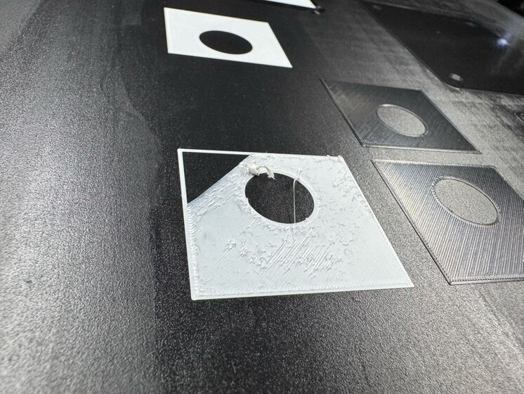
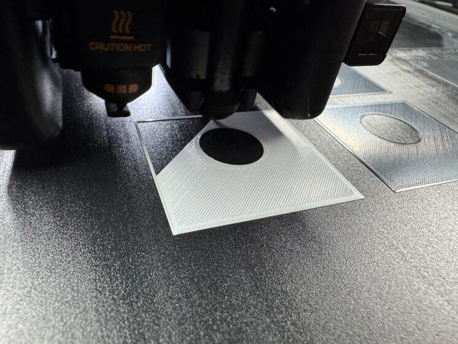

First layer
Five hundredths of a millimetre.
The first layer is pressed into the plate through a gap the printer sets for itself. A little too small and the plastic has nowhere to go. It tears and smears, and the printer stops to say its extruder is overloaded, which sounds like a different problem.
Seen in Bambu PETG Basic, white · Mark 1 · glued Engineering Plate · right 0.2 mm nozzle · 8 November 2026Not tried in: any other plastic, plate or nozzle


“Let’s see if we can change just that one variable of the Z offset and try again.”
That print ran to the end. The next day: “So the multicolor print turned out beautifully that time.”
It belongs to one setup
The lift is set only while a right-side filament is printing, and taken off again before each tool change. The black from the left nozzle prints with none. It is the number for this plastic on this plate through these nozzles, and for nothing else.
Still openOne print. The record calls the cause unconfirmed: the lift was the only change and the print finished, which does not rule out something else helping.
PET-GF’s number is not PETG’s
Two days earlier this same job had been sent with the lift Mark 1 uses for PET-GF on textured plate, 0.18 mm. On the glued plate, Derek: “lol, okay, print stopped, it lifted right off.” Asked whether that lift was the printer’s own: “No. That should be documented as for pet-gf on textured plate.”